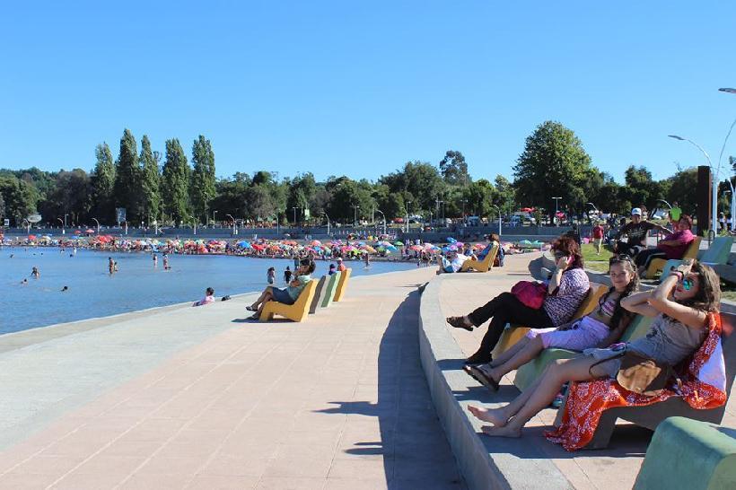
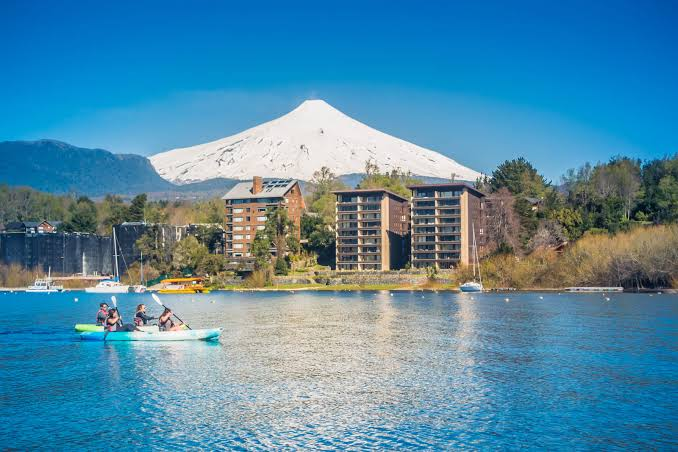
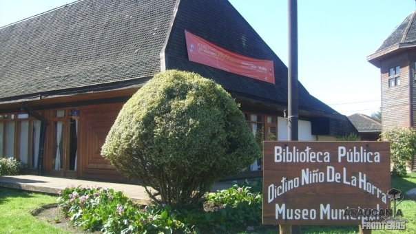
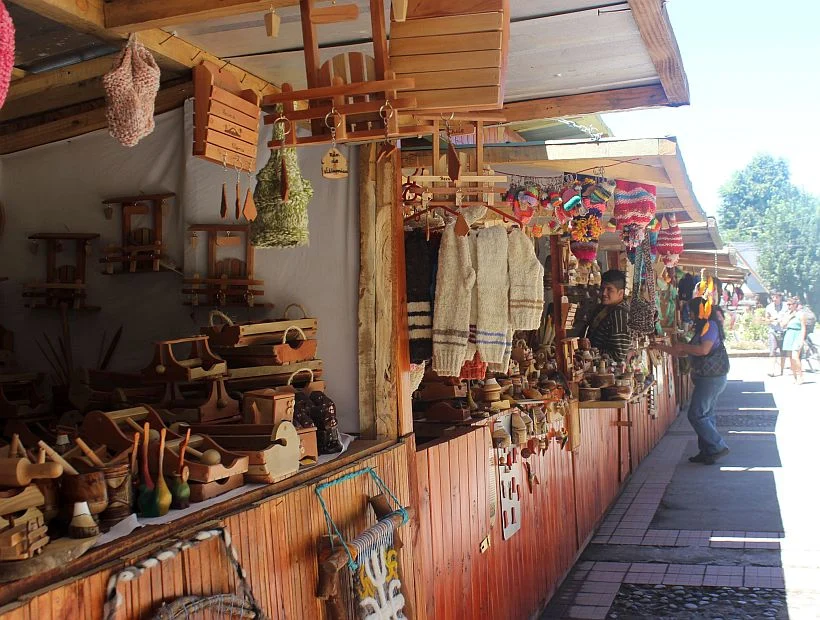
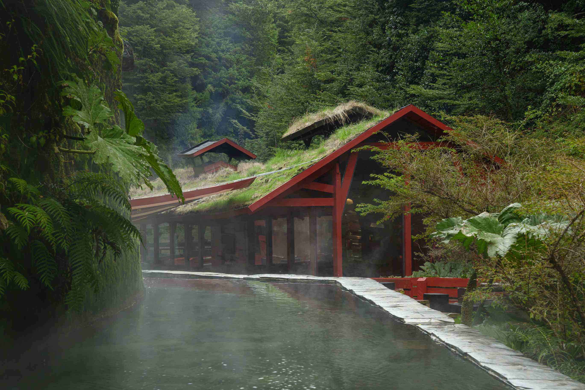
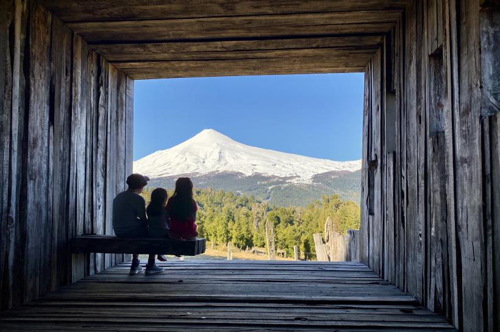
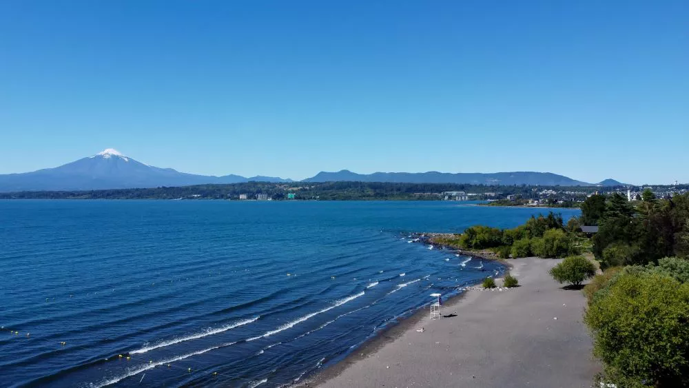

Costanera de Villarrica
Camina junto al lago disfrutando de vistas panorámicas del volcán y los cerros cercanos.

Explora el lago, la costanera y los paisajes lacustres más tranquilos de la región.
↓
Camina junto al lago disfrutando de vistas panorámicas del volcán y los cerros cercanos.

Conoce la cultura mapuche y la historia de la fundación de la ciudad.

Descubre artesanía, gastronomía y tradiciones del pueblo mapuche.

Recorre pasarelas de madera entre pozas termales en un entorno natural único.

Disfruta de una vista panorámica completa del lago y el volcán desde las alturas.

Vive un atardecer inolvidable junto al lago, con el volcán reflejado en sus aguas calmas. Ideal para cerrar el día con tranquilidad y paisajes de postal.